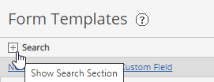
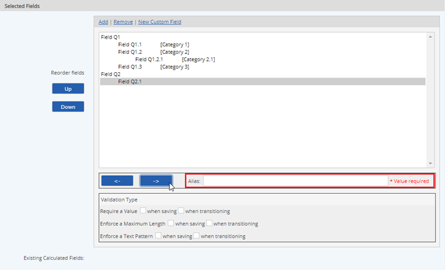
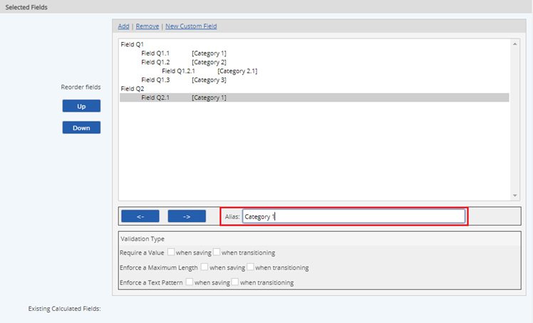

Creating Multi-level Ascending Relationships Between Fields on a Form
Allowing users to create multi-level ascending relationships between fields on the form, can be used in complex EQL queries to produce results that are analytics-ready with zero or minimal post-processing required.
To create multi-level ascending relationships between fields on a form
From the Main Menu, click Setup. The Setup window expands to the right.
Under Templates, click Form. The Form Templates window will open.
On the Form Templates window:
To access an existing form:
Click the Search button.

In the Name textbox, type in the form template name that has custom form fields.
Click Search.
From the search result, right click the form template of interest. A menu will open.
To edit a custom field so that it becomes a child of the custom field above it, click a custom field in the Selected Fields section, and then click the right arrow button. The Alias textbox appears.

Input a value into the Alias textbox.
A value must be inputted to be able to move a custom field under another custom field.

To edit a custom field so that it becomes a parent to the custom field below it, click a custom field in the Selected Fields section, and then click the left arrow button.
In the Saving mode section select Update Current Version. This ensures the current version is updated instead of creating a new version.